深度高度差
0.858
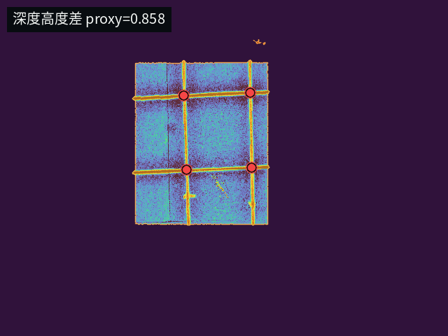
局部背景深度减当前深度，凸显高出平面的结构。
固定当前区域快照，只读复刻执行微调的 TCP ROI + Hough 找点，再测试所有可用模态底图；不写入真实点位、扫描账本或分类事件日志。
当前没有可用的红 / 绿人工标注或可置信覆盖图标注，因此不能计算真实准确率。本页的最佳模态来自无标注代理评分：高置信比例、中心 / 环形响应差、局部纹理、脊线破坏和证据质量。
执行层使用 TCP 工具坐标/线性模组工作范围，不使用手动画的像素工作区作为执行 ROI
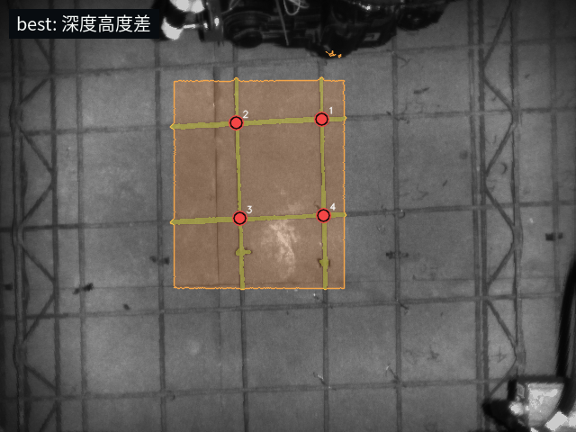
| # | 模态 | 无标注代理评分 | 真实准确率 | 高置信 | 红 | 绿 | 不确定 | 中心差 | 说明 |
|---|---|---|---|---|---|---|---|---|---|
| 1 | 深度高度差 depth_height_response |
0.858 | 无标注 | 100.0% | 4 | 0 | 0 | 0.502 | 局部背景深度减当前深度，凸显高出平面的结构。 |
| 2 | 深度梯度边缘 depth_gradient_response |
0.858 | 无标注 | 100.0% | 4 | 0 | 0 | 0.322 | Sobel 深度梯度，凸显高度突变边界。 |
| 3 | 原始 depth 高度差 depth_image_height_response |
0.858 | 无标注 | 100.0% | 4 | 0 | 0 | 0.503 | 直接使用 /Scepter/depth/image_raw 的局部高度差。 |
| 4 | 原始 depth 梯度 depth_image_gradient_response |
0.858 | 无标注 | 100.0% | 4 | 0 | 0 | 0.322 | 直接使用 /Scepter/depth/image_raw 的深度梯度。 |
| 5 | 红外暗线响应 ir_dark_response |
0.837 | 无标注 | 100.0% | 4 | 0 | 0 | 0.291 | 局部背景减 IR，凸显钢筋暗线和结节阴影。 |
| 6 | Hessian 脊线 hessian_ridge_response |
0.837 | 无标注 | 100.0% | 4 | 0 | 0 | 0.448 | 在组合响应上提二阶亮脊。 |
| 7 | CLAHE 红外暗线 ir_clahe_dark_response |
0.828 | 无标注 | 100.0% | 4 | 0 | 0 | 0.303 | 先做局部对比度增强，再提暗线响应。 |
| 8 | 红外 + 深度组合 combined_ir_depth_response |
0.812 | 无标注 | 100.0% | 4 | 0 | 0 | 0.532 | 深度高度差和红外暗线加权融合。 |
| 9 | Frangi-like 脊线 frangi_like_response |
0.812 | 无标注 | 100.0% | 4 | 0 | 0 | 0.549 | 多尺度线状结构增强。 |
| 10 | 梯度 + 脊线融合 gradient_ridge_fusion |
0.812 | 无标注 | 100.0% | 4 | 0 | 0 | 0.493 | 深度梯度、Hessian 和 Frangi 的保守融合。 |
| 11 | 对齐彩色亮度暗线 transformed_color_luma_dark_response |
0.798 | 无标注 | 100.0% | 4 | 0 | 0 | 0.168 | 从 transformedColor 亮度提暗线，作为对齐可见光对照。 |
| 12 | 对齐深度高度差 transformed_depth_height_response |
0.763 | 无标注 | 100.0% | 2 | 2 | 0 | 0.115 | 使用 transformedDepth 的局部高度差。 |
| 13 | 彩色亮度暗线 color_luma_dark_response |
0.758 | 无标注 | 75.0% | 2 | 1 | 1 | 0.120 | 从彩色图亮度提暗线，作为可见光对照。 |
| 14 | 红外原图归一化 raw_ir_response |
0.575 | 无标注 | 75.0% | 0 | 3 | 1 | 0.000 | 直接使用 IR 灰度，观察材质纹理。 |
| 15 | pointAI 底图暗线 pointai_result_dark_response |
0.342 | 无标注 | 25.0% | 0 | 1 | 3 | 0.006 | 使用 pointAI/result_image_raw 的暗线响应，通常接近 IR 输入。 |
| 16 | world_coord Z 高度差 world_coord_z_height_response |
0.095 | 无标注 | 0.0% | 0 | 0 | 4 | 0.000 | 使用去平面后的 world_coord Z 做高度差对照。 |

局部背景深度减当前深度，凸显高出平面的结构。
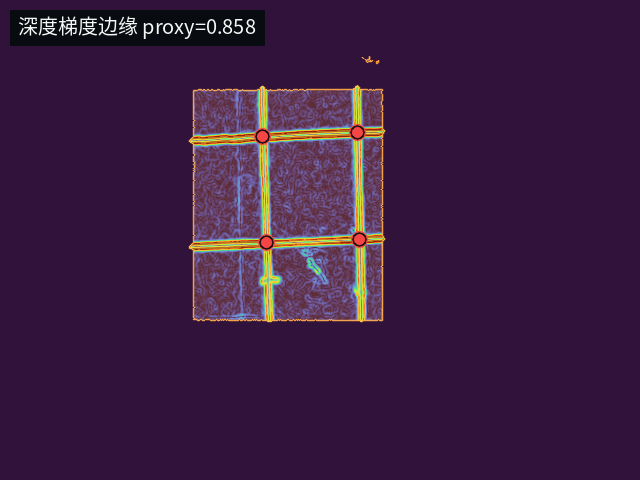
Sobel 深度梯度，凸显高度突变边界。
直接使用 /Scepter/depth/image_raw 的局部高度差。
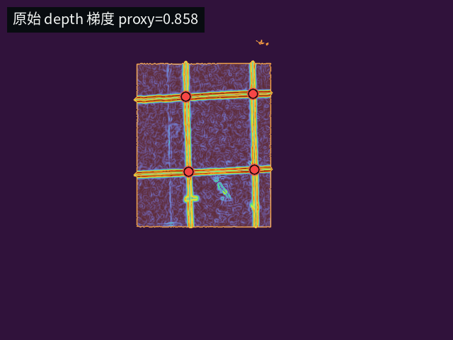
直接使用 /Scepter/depth/image_raw 的深度梯度。
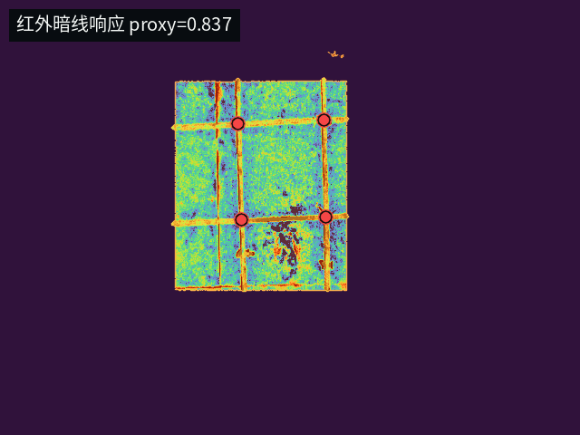
局部背景减 IR，凸显钢筋暗线和结节阴影。
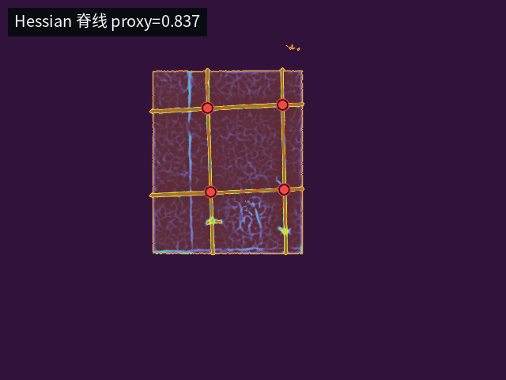
在组合响应上提二阶亮脊。
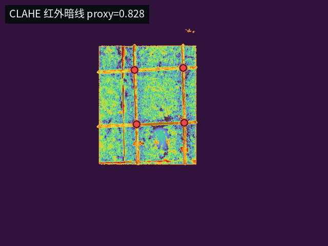
先做局部对比度增强，再提暗线响应。
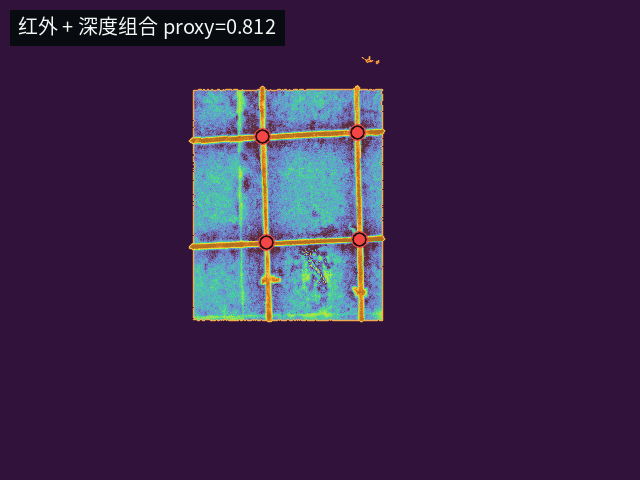
深度高度差和红外暗线加权融合。
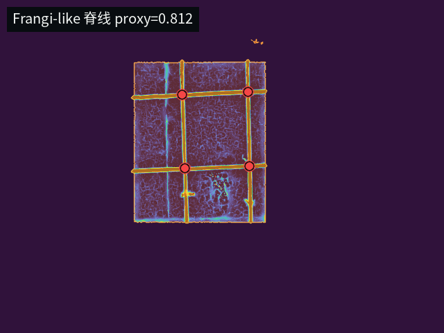
多尺度线状结构增强。
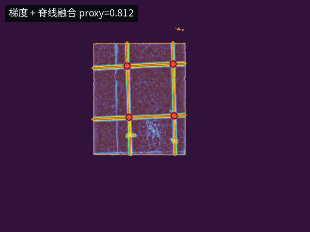
深度梯度、Hessian 和 Frangi 的保守融合。
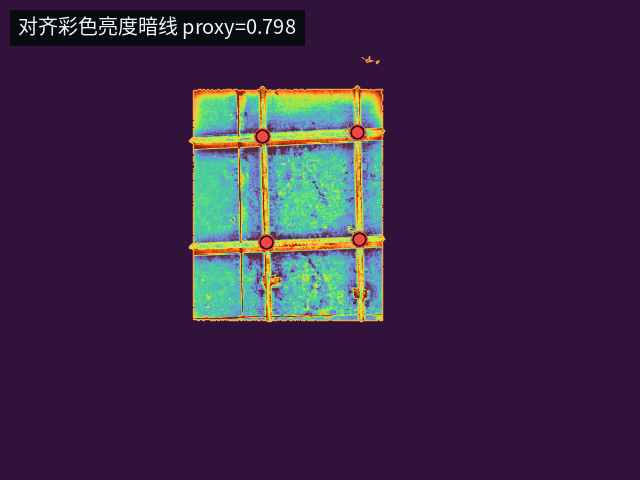
从 transformedColor 亮度提暗线，作为对齐可见光对照。
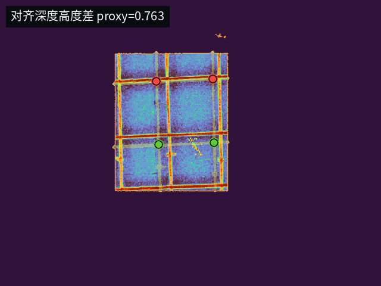
使用 transformedDepth 的局部高度差。
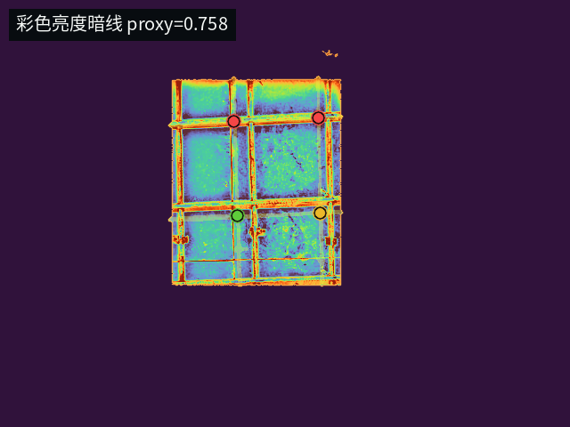
从彩色图亮度提暗线，作为可见光对照。
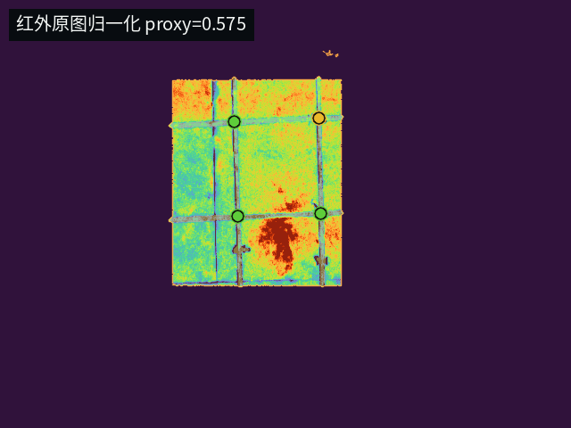
直接使用 IR 灰度，观察材质纹理。
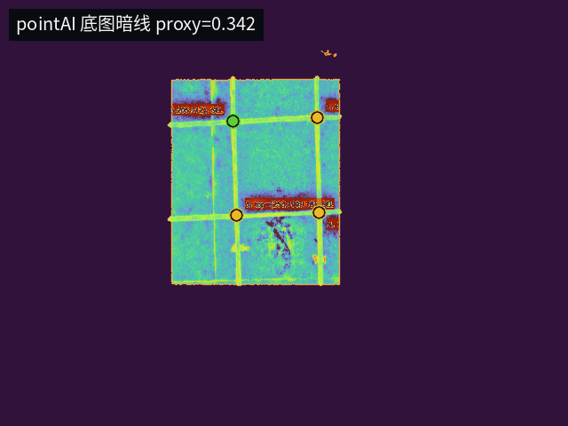
使用 pointAI/result_image_raw 的暗线响应，通常接近 IR 输入。
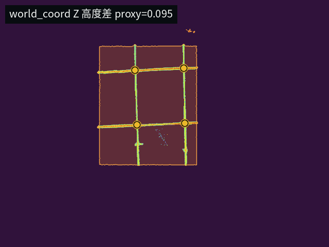
使用去平面后的 world_coord Z 做高度差对照。
| 点位 | 分类 | score | quality | TCP(mm) | 中心差 | 脊线破坏 | reason |
|---|---|---|---|---|---|---|---|
| 1 | 已绑扎 | 0.900 | 1.000 | (79, 46, 110) | 0.515 | 0.000 | center_response_texture_or_ridge_break |
| 2 | 已绑扎 | 1.000 | 1.000 | (86, 205, 110) | 0.521 | 0.838 | center_response_texture_or_ridge_break |
| 3 | 已绑扎 | 1.000 | 1.000 | (253, 199, 117) | 0.479 | 1.000 | center_response_texture_or_ridge_break |
| 4 | 已绑扎 | 0.900 | 1.000 | (248, 42, 113) | 0.493 | 0.000 | center_response_texture_or_ridge_break |